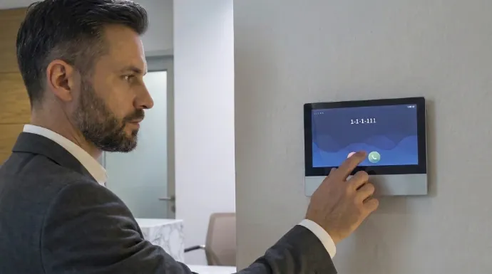

CCTV Security Systems
Extra coverage either side of the gate or front door.
Explore CCTV installationSee who's there, speak with them, and manage access with more confidence, for homes and businesses across Logan, Brisbane and the Gold Coast.

The first decision is door or gate: a unit right at the entry, or one further out at the boundary that needs its own cable run or wireless link back to the house. From there it's mounting the outdoor station at a sensible height, running power and data, installing the indoor unit or pairing the app, and, where there's an electric lock or gate motor, wiring in the release so you can let someone in without walking out yourself.
Once it's connected, we test the video, audio and release function from both the indoor unit and the app, and make sure the picture and two-way audio are clear before calling it done.
A door intercom is the simpler of the two: one outdoor station at the entry with a camera, speaker and a release for the door itself, usually a shorter cable run back to the indoor unit or router. A gate intercom sits further from the house, which means a longer cable run (or a wireless bridge where trenching isn't practical) and, in most cases, pairs with an existing electric gate motor or a lock release you're adding at the same time.
The main factors are door vs gate, the length and difficulty of the cable run, whether an electric lock or gate motor already exists or needs adding, the number of indoor handsets, and whether you want app access in addition to (or instead of) an indoor unit.
Know roughly how far the gate is from the house if it's a gate job, whether there's already power near the gate post, whether you want app access, indoor handsets, or both, and who in the household or business needs to be able to answer and release.
Outdoor stations mounted where direct sun washes out the camera in the afternoon; gate units run on underpowered cable that works fine in testing but drops out over a long run; no weatherproofing on outdoor cable entry points; and cheap units with laggy audio that make it hard to actually understand who's talking.
Extra coverage either side of the gate or front door.
Explore CCTV installationEntry-point protection to complement visitor screening.
Explore alarm systemsA stable connection so app-based intercoms respond instantly.
Explore WiFi and data cablingGated estates and standalone homes across Logan.
View Logan service areaCharacter homes and townhouse complexes.
View Brisbane service areaHigh-rise entries and gated communities.
View Gold Coast service areaYes, on app-connected systems you can see and speak with whoever's at the door or gate from your phone, whether you're in the backyard or out of the house entirely, and remotely release the door or gate if you choose to.
A door intercom is usually a single unit at the entry with a camera, speaker and a release for the door itself. A gate intercom sits further from the house, needs its own cable run or wireless link back to the property, and typically pairs with an electric gate or lock release.
Yes. Office and shopfront intercoms are common for controlling after-hours access or a locked front door, and warehouse gate intercoms are common for managing deliveries without staff walking out to the gate each time.
Often, yes, depending on the system. Many intercom units are effectively a camera in their own right and can be viewed alongside your other CCTV footage through the same app, or at least sit on the same network without conflicting.
The property location, whether it's a door or gate installation, roughly how far the gate is from the house if relevant, and whether you already have an electric lock or gate motor installed.
Let us know if it's a door or gate job and we'll come back with options that fit the property.